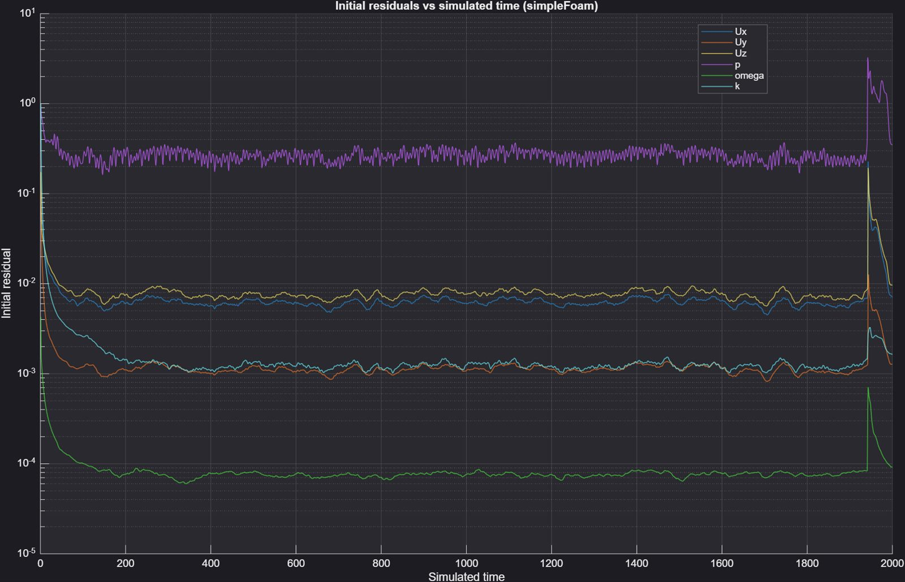
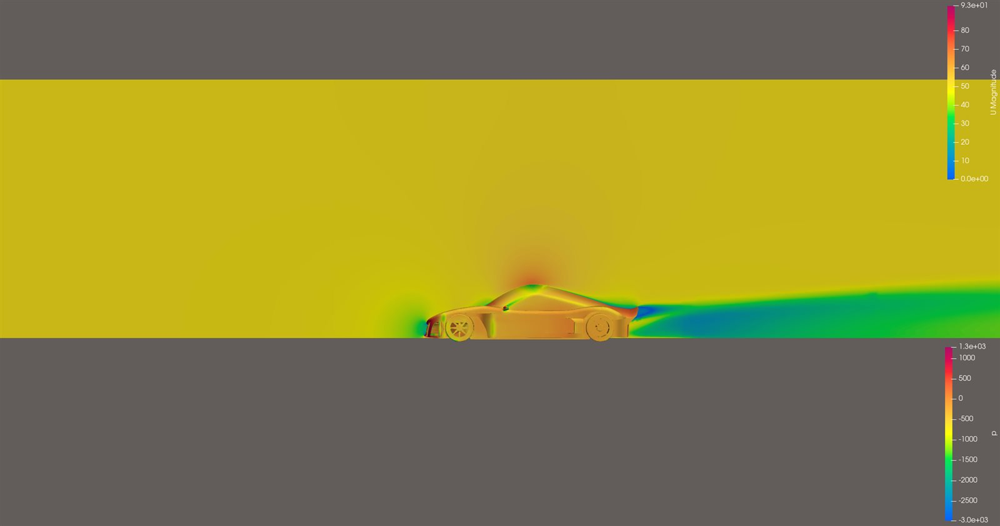

Half-car symmetry-plane simulation of a full aero package (vortex generators, underbody diffuser, engine intake, sidepods) at 50 m/s, solved with OpenFOAM v2512 and a GPU-accelerated pressure solve.
Full external aerodynamic simulation of a race car half-model (symmetry plane at X = 0) at 50 m/s (~180 km/h), covering the complete aero package rather than just a bare body: front/rear wheels with rotating-wall boundary conditions, mirrors, a front splitter vent and side skirt, six roof-mounted vortex generators, an engine intake flow path, an underbody diffuser strake, and a rear spoiler spanning to the symmetry plane. The goal was a credible steady-state drag/downforce baseline (Cd/Cl), with a transient follow-up once the flow proved to have a genuinely unsteady wake rather than a numerical artifact.
rotatingWallVelocity, ω = 173.07 rad/s at 50 m/s, wheel radius 0.2889 m.engsim.stl): modeled as a flow-rate outlet (not a wall) at 0.392 m³/s, derived from a generic 3.0L twin-turbo V6 assumption (7500 rpm, 1.2 bar boost, PR≈2.2, 95% volumetric efficiency). Extraction direction was verified by inspecting the solved flux field directly (100% positive flux = genuine extraction, not injection) rather than assumed from the BC alone.Built with snappyHexMesh across 12 parallel processes. Refinement levels were tuned per-patch: body (4,5), wheels (5,6), mirror (6,6), and everything else aerodynamically sensitive — front vent, side skirt, all six vortex generators, engine intake blocker, diffuser fin, rear spoiler — at a uniform (6,7) surface level, which was the proven-safe ceiling for surface-level refinement on this geometry.
Level 8 refinement was needed locally at the vortex generators but
caused repeated snappyHexMesh crashes (segfaults in
hexRef8::setRefinement, heap corruption in
addLayers) whenever applied as a surface-level refinement.
The fix was to apply level 8 only through small dedicated volumetric
refinement boxes around each VG (~0.0004–0.0009 m³ each) instead
— never as a surface level. An early version used one large shared
box spanning all six VGs (~0.027 m³, mostly empty roof space),
which is why cell counts briefly exploded; splitting it into six tight
individual boxes fixed that.
A y+ check on an early-iteration field showed all patches healthy: the ground averaged y+ ≈ 252 (down from 1594 before the ground got its own boundary layers), and the vortex generators stayed well-behaved (avg 33–131, max only 169–337, no near-wall instability).
Two-stage approach: a steady RANS precursor (simpleFoam,
SIMPLEC/consistent yes, relaxation on U/k/omega only, no p
relaxation — matching OpenFOAM's own motorBike tutorial reference
settings rather than a guessed configuration) run to residual
plateau, followed by a transient PIMPLE run
(pimpleFoam, backward time scheme, 3 outer correctors) once
residual oscillation stopped decaying — the signature of a genuinely
unsteady wake rather than a numerics problem.
Pressure was solved on GPU via amgx4Foam (a direct
AmgX integration, not the PETSc AMGX wrapper), running over a
custom-built CUDA-aware OpenMPI, with an AGGREGATION AMG-preconditioned
PCG solver. The transient run used maxCo 30 rather than the
default-ish maxCo 1: with sub-millimeter near-wall cells,
maxCo 1 Courant-limits the timestep down to
≈8×10-6 s, which would have made 2 seconds of
physical time take roughly two weeks of wall-clock time. Letting
bulk-flow cells set the pace instead cut that by ~30×.
engSim) sits spatially interleaved
with the side skirt. Dropping its refinement to save cells (it's just
a flat blocker) crashed snappyHexMesh at every lower level tried,
because the level mismatch against its (6,7)-level neighbor produced
bad transition cells. Fix: match neighboring patch levels exactly
rather than optimizing each patch in isolation.
minThickness from 0.1 to 0.05 (chasing better
layer coverage on the front vent) let near-degenerate, near-zero-height
cells through, which blew up omega's wall function
(ω ~ 1/y) to ~105 from the very first
iteration and crashed the solver immediately. Separately, setting
nGrow to 1 (trying to close layer gaps at sharp edges)
caused a catastrophic layer-coverage collapse across nearly the whole
mesh, since it grows the do-not-extrude zone around every problem
spot and this geometry has too many separate thin/sharp trouble spots
for that not to cascade.
Converged coefficients on the corrected-BC mesh (reference area 0.9314 m²: 9187.988 cm² half-model + 126 cm² wheel overhang):
| Coefficient | Value |
|---|---|
| Cd | 0.278 |
| Cl | -0.180 (net downforce) |
A large lateral force coefficient (Cs ≈ -0.807) also appeared in this result and was investigated on the assumption it might be a bug — it wasn't. It's an expected artifact of the half-model approach: a symmetric car's true side force is zero by construction, and a half-model mesh with only one symmetry plane can't compute that near-zero quantity meaningfully. Confirmed as artifact, not chased further.

